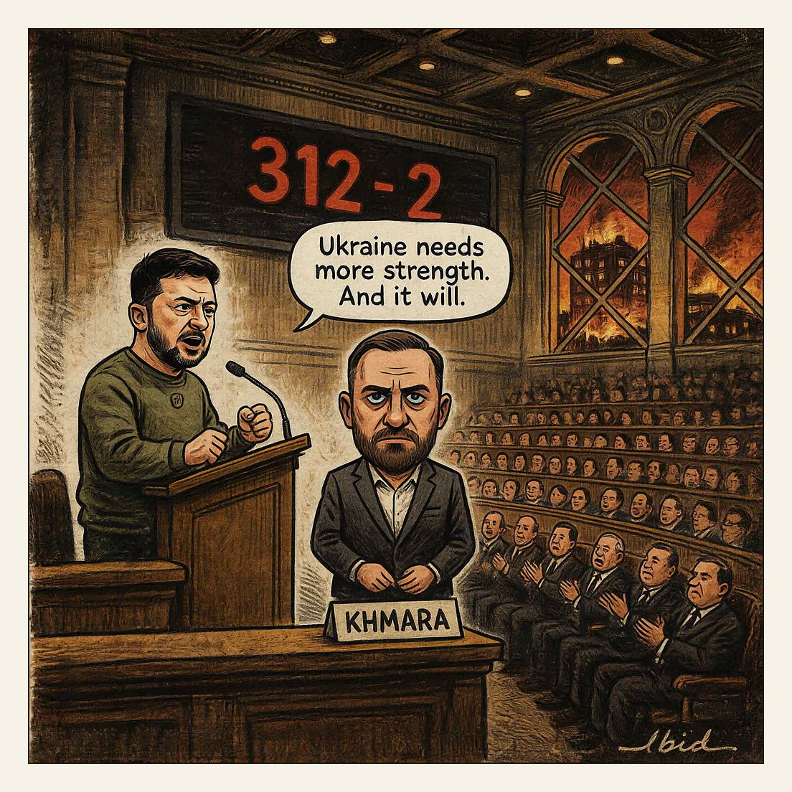

Nationwide turnout: 314.
The Electorate

Russian ballistic missile strikes on Kyiv and the surrounding region killed at least nine people and wounded 33 on Thursday, collapsing a nine-storey residential block. Ukraine's parliament the same day confirmed Yevhenii Khmara, the career SBU officer who led the Alpha unit, as defence minister by 312 votes to two, filling the post vacated by Mykhailo Fedorov. A day earlier Fedorov released a video calling for elections and describing a systemic crisis of governance. Zelenskyy's term expired in May 2024 and voting is barred under martial law; the last national election was in 2019.